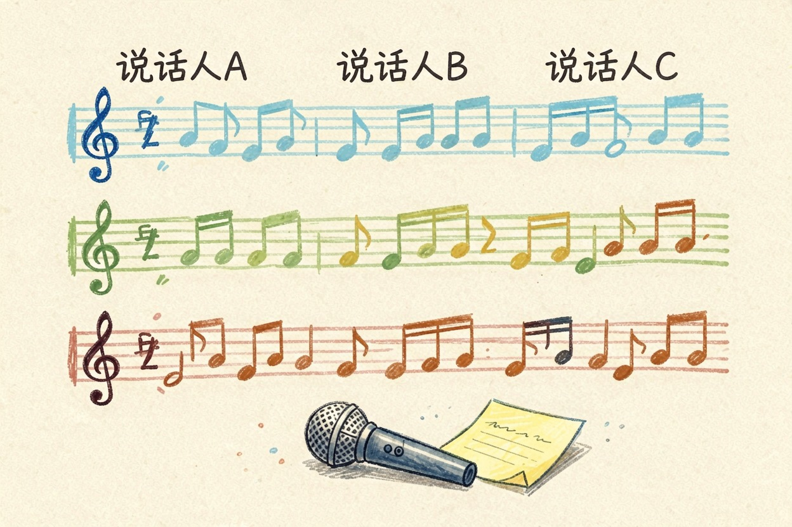
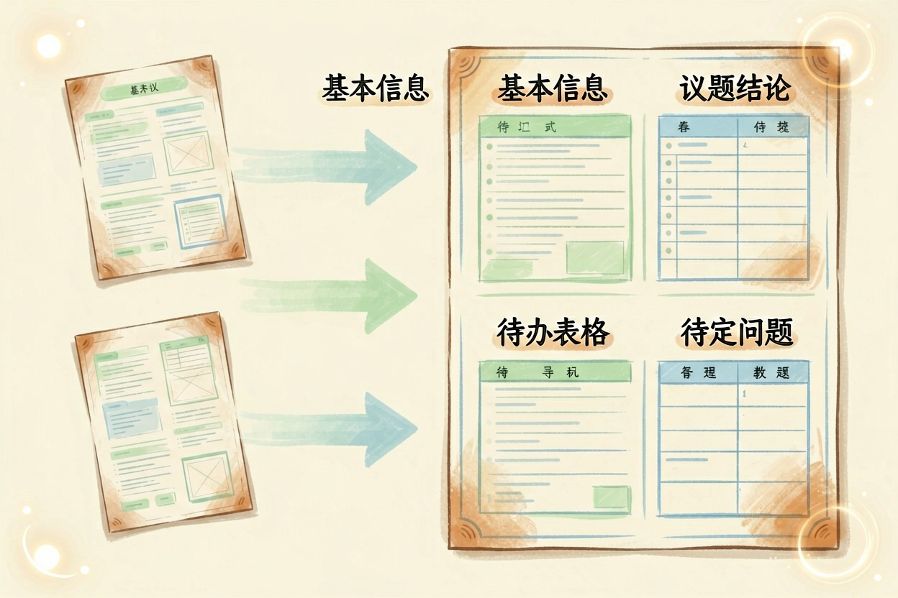
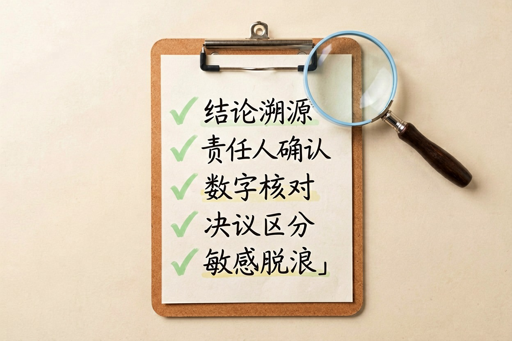

用 AI 整理会议纪要：从录音到待办
一段两小时的会议录音，怎么变成责任人和期限都写清楚的东西，中间其实隔着好几道工序。
ai整理会议纪要是本文的核心主题，下面详细介绍如何使用。
用 AI 整理会议纪要，第一步是拿到带说话人的文字稿

最常见的翻车在第一步：把两小时录音原样丢进聊天框，指望它吐出能发群的成品。多数对话工具一次能吃下的内容有限，长录音进去，中段会被无声跳过。
顺序反过来：先转写，再归纳。飞书妙记、通义听悟、腾讯会议自带的记录都属于转写层，能区分说话人。具体怎么挑，看AI 会议纪要工具怎么选；免费额度各家不同，用之前去官网扫一眼。
三个小动作就能把识别率抬一大截：设备放桌子正中间；开场让每人报名字；重要结论当场复述一句。产品经理老陈养成第三个习惯后，返工率砍半。
第二步：把逐字稿洗一遍再喂进去
直接复制这段提示词：
> 这段代码展示了如何用 AI 整理会议纪要，第一步是拿到带说。
> 这段代码展示了如何用 AI 整理会议纪要，第一步是拿到带说。
以下是一段会议逐字稿，请只做三件事：
1. 删除语气词和重复口误，不改变任何事实表述；
2. 把「说话人1/2/3」按这张对照表替换成真名：说话人1=陈明，说话人2=李婷……
3. 按话题切分，每段前加一个不超过 10 字的小标题。
不要总结，不要删减观点，不要补充原文里没有的内容。
逐字稿：<粘贴>最后一行最关键。少了它，模型会顺手「润色」，把没说过的话补进去。想杜绝这种编造，可参考防止 AI 编造内容。
第三步：生成纪要的完整提示词模板

多数写法就一句「帮我总结会议纪要」，出来的是流水账。管用的提示词得写清四件事：角色、输出结构、待办字段、禁止编造。怎么搭更稳，看提示词怎么写更稳。
你是一名资深会议秘书。基于我提供的会议文字稿，输出中文纪要，结构固定：
一、基本信息（时间、主题、参会人）
二、议题与结论（每个议题：背景一句 + 最终结论一句）
三、待办事项（表格：事项 | 责任人 | 期限 | 验收标准）
四、待定问题（未达成一致的争议点，注明分歧双方）
硬性要求：
- 每条结论都要能在原文找到对应句子，找不到就写「原文未明确」；
- 不要推测责任人，文字稿里没指派的一律写「待指派」；
- 期限没提到的写「待定」，不许自己安排日期；
- 客观陈述，不加评价。
文字稿：<粘贴>「找不到就写原文未明确」这条最省事，能把校对量压掉一大半。待办表格出来后直接复制进多维表格，责任人一栏就能 @ 到人。
第四步：发出去之前，过一遍这五条清单

- 每条结论能定位到原句吗？定位不到就删或标问号。
- 责任人是本人当场认下的吗？别把一句「我看看」写成「张三负责」。
- 数字动过没有？金额、日期、百分比是错误高发区。
- 有没有把讨论过程写成决议？没拍板的挪进「待定问题」。
- 涉及客户名、报价、人事的段落，发之前先脱敏。
补充：ai整理会议纪要的详细用法可参考上文步骤。
A: 掌握 ai整理会议纪要 的关键在于多实践，建议先跑通基础流程再逐步深入。
Q: ai整理会议纪要 免费吗？ A: 大多数工具提供基础免费额度，具体以官网当前说明为准。
ai整理会议纪要的最佳实践见上文详细步骤，别错过核心要点。
本文信息核对于 2026-08-05。AI 产品的价格、免费额度与功能变动频繁，实际以各工具官网当前说明为准。